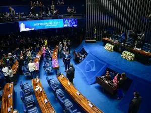
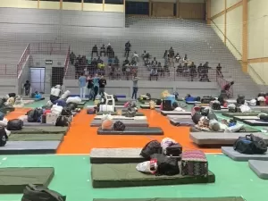

Ainda não tem um email UOL? Assine
| PRODUTO | NOTÍCIAS | CARROS | ECONOMIA | FOLHA | ESPORTE | SPLASH | UNIVERSA | VIVABEM | TILT | ECOA | MOV | NOSSA | TAB |
|---|
Ricardo Salles pode ser 1º defecção bolsonarista do PL |
Com Bretas fora, bolsonarismo é o que sobrou da Lava Jato |
Escravidão: Brasil é museu de grandes novidades |
Confundir civismo com golpismo ameaça nosso futuro |
Lewandowski quer substituto corajoso e imune à pressão |
|---|
Com risco de derrota, governo quer atrasar votação da MP do combustível
Centão quer dar recado de que Planalto ainda precisa organizar base na Câmara
Kupfer: Mesmo com reajuste na gasolina, inflação deve recuar no primeiro semestre
Governo anuncia reajuste na faixa de pobreza do novo Bolsa Família para R$ 218 |

Senadores definem que trabalharão só três dias por semana e três semanas por mês |

O que Aurora e Salton agora têm em comum com empresas como Zara e Nespresso |
|---|